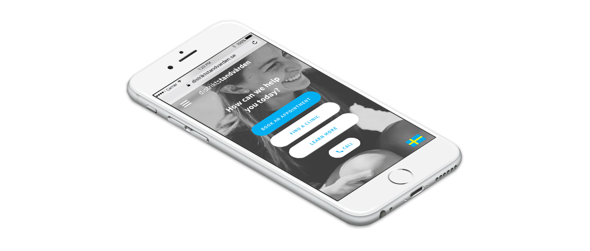
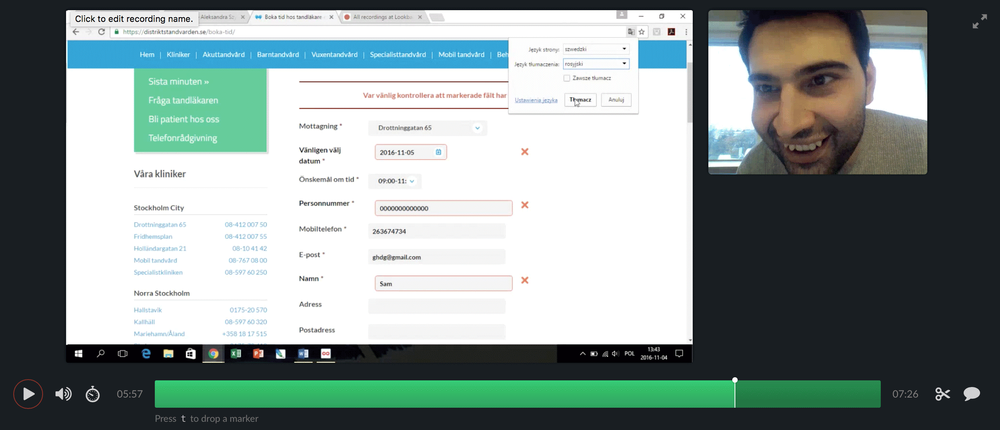
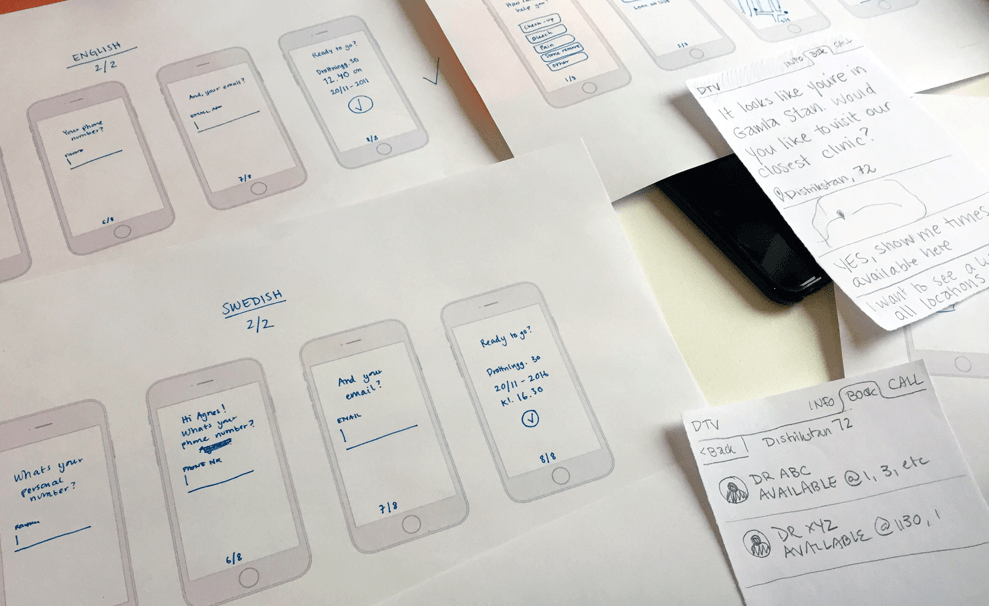
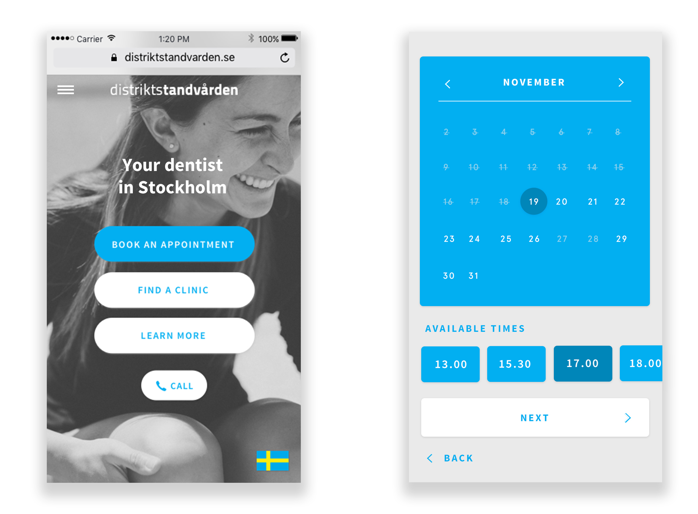

UX / Concept / UI
Distriktstandvården is a Stockholm-based dental company. Me and my team at Hyper Island were asked to improve the digital experience in order to increase Distriktstandvården patient base.

We performed desktop research and in-depth interviews and were able to map out what patients experience before, during, and after an appointment with the dentist. Since painpoints were mainly found in booking process, we conlcuded that the most relevant design challenge was to improve the online booking process.
Together with Distriktstandvården, we redefined the challenge to answer the question how we can simplify and unclutter the users’ intial digital journey - from landing page to booking to confirmation.

The conversion rate was %. We wanted to understand when and why the users fall off.
In order to do so we let potential patients use the existing website with users and gathered their feedback. This was done with Lookback, recording the users face, desktop/mobile screen and the interactions on the interface.

Analyzing the results from the research we saw that the current booking process made the users confused and out of control. We had a few hypothesis why, such as a weak CTA, tedious booking fields, confusing information hierarchy and no options for non-swedish speakers.
Based on these hypothesies, we came up with possible solutions:
- Clear call to action
- Conversational interface
- Only show available times
- Option to go back
- Auto populate fields for speed
- Clear confirmation

After some initial experimentation, we created a structured and fast-paced model for prototyping. For 20 minutes, we worked independently on different sections of the user flow. We’d then reconvene and spend 5 minutes per person to present our latest draft to the rest of the team and receive feedback. After 4 sprint and feedback cycles, we brought the different pieces of the prototype together in digital form.

To validate our design decisions and make the user flow as intuitive and friendly as possible, we built an interactive prototype and tested it with potential customers in 3 feedback and iteration cycles. For this we used Marvel and Lookback.

After delivering the wireframes to the client, I played around with potential visual design.

A big thanks to my team; Katrine Bimell, Clara Braddick, Daniel Montano, Aleksandra Szymczak and Sebastian Østgaard.